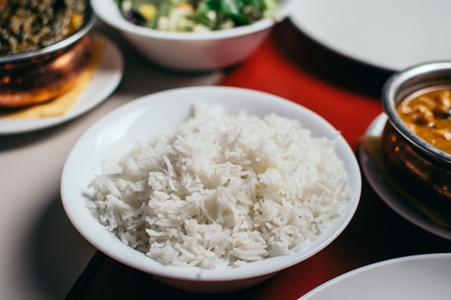

Rice

Description
Plain rice. That's all.
Ingredients
- 1 cup long-grain white rice
- 2 cups water
Steps
- Rinse the rice
- In a medium saucepan, combine the rinsed rice and water
- Bring the mixture to a boil over medium-high heat.
-
Once boiling, reduce the heat to low, cover the saucepan with a
tight-fitting lid, and let it simmer gently for about 15-20 minutes, or
until the water is absorbed and the rice is tender.
-
Turn off the heat and let the rice sit, covered, for 5 minutes. Then,
remove the lid and fluff the rice gently with a fork.
Home